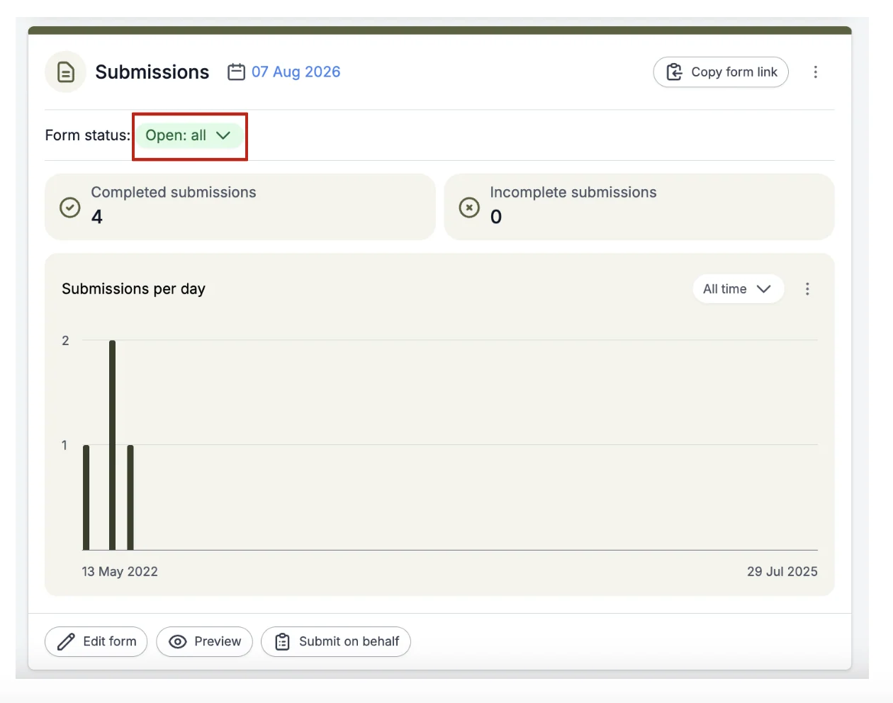
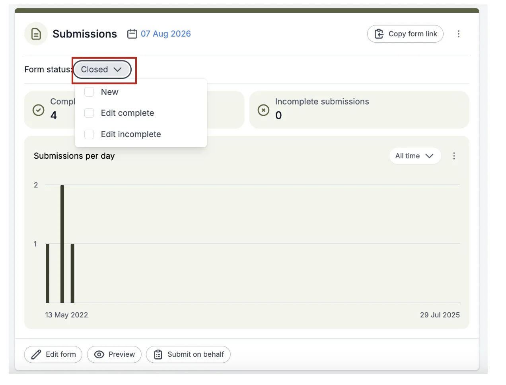
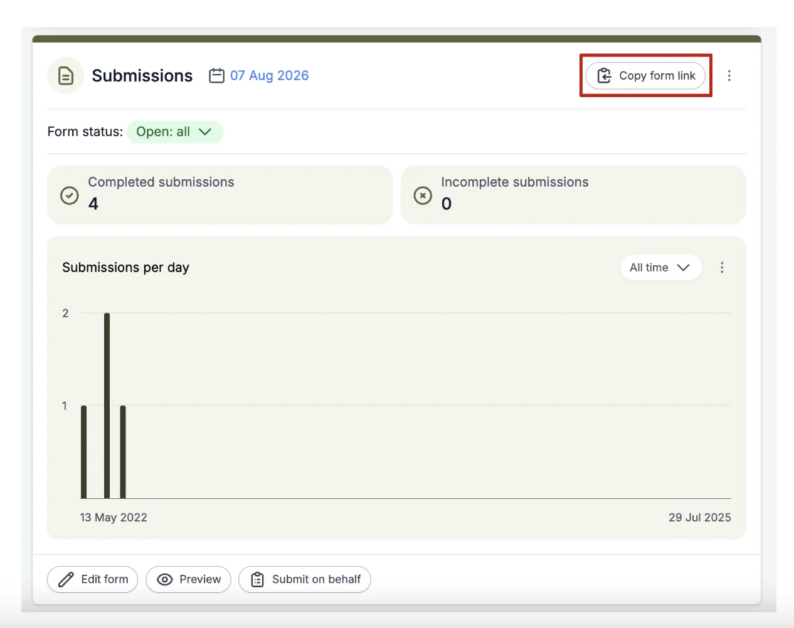

Opening and closing submissions (deadlines)
For event organisersNot an organiser?
In order to make the submission system live, you must open submissions.#
NB: Before you open your call for abstracts, it is advisable to complete a test submission.
Skip to video - How do I allow for reworking and late breaking abstracts?
Go to Event dashboard → Submissions panel
To allow abstract submissions, go to the Form Status section on the submission panel and click on the drop-down box next to it.

Next, you need to tick the boxes in the drop-down menu to "open" submissions.
- New (allow all new submissions)
- Edit Complete (allow submitters to edit their current submitted abstracts)
- Edit Incomplete (allow submitters to edit their incomplete submitted abstracts)
As you can see, you can choose which you would like to have open or closed, by either
ticking the relevant box to "open, or unticking to "close" submissions.
For example, if your submission deadline has passed, you can stop new submissions by unticking the New box, but you can still allow edits to completed or incomplete submissions to continue by keeping those boxes ticked.
When you have closed all forms of submissions, the Open status will turn grey and say closed.

NB: Before you promote you call for abstracts, it is advisable to complete a test submission, by following these steps.
- Open your call for abstracts.
- Open the submission link, preferably in an incognito window or browser and using an email address that is not associated with any admin rights (ie. not an event admin or a client admin), create an account and complete a dummy form.
- Go back to the event as an admin and check, using the submissions table, whether the responses to the questions are in the format you expected.
Where to find the Submission Form Link
Click on Copy Form link to copy the URL (link) required to access the submission system. This link should be published on the relevant website and/or emails to invite submissions to be made.

How do I allow for reworking and late-breaking abstracts?
Common questions#
How do I change the deadline/ notification date for submissions?#
See Event details.
NB - You will still need to switch off submissions manually - see Open and close submissions / call for abstracts.
I want to close submissions, but allow those who have already submitted to edit their submissions. How do I do that?#
Didn't solve it? Ask our support team
No question is too small, and there's no charge for asking. Raise a ticket and someone who knows the software will pick it up.
Did this page solve it?
Thanks — this helps us fix it.